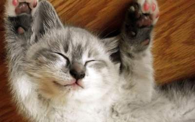

Why napping 20hours a day is good for your health
Every kitten knows the golden cycle of daily tasks: eat, sleep, annoy human, repeat. But what if we told you that kitten scientists found out that most of those tasks could be swapped with sleeping. Dr McMittens from Catifornia told us about his research.
Interviewer: Welcome Dr. McMittens, it´s a pleasure to have you here at our Kitten News center.
Dr. McMittens: Meow, the pleasure is mine. I will sit on this table over here meow.
Interviewer: Well, there goes our interview-chair. Dr. McMittens, recently your published paper suggested kittens to sleep 20 hours a day. How did your research team come to this conclusion?
Dr. McMittens: Meow, sleeping is in the nature of the cat. Meow, our ancestors had slept for hours, and the research has shown that the more we slept, the longer the average cat had to live. Meow.
Interviewer: Couldn´t that be because kittens are, when sleeping in a human´s house, not exposed to any significant dangers?
Dr. McMittens: Meow, no, kittens are always at danger, meow. Sometimes, the food bowl is empty and we have to ask human 5 times until he refills it, meow.
Interviewer: Tell us more about the benefits of sleeping up to or even more than 20 hours a day.
Dr. McMittens: Meow, benefits are tremendous, meow. First of all, humans tend to find sleeping kitty cute, therefore kitty gets more belly rubs and neck scratches, meow.
Dr. McMittens: Also, the more kitten sleeps, the less it has to go outside. Almost no human wakes up kitty to go outside. It´s a very effective defensive mechanism formed by years of kitten evolution, meow.
Napping has increased the average life span of a Kitten by 1498 %!
Interviewer: This lifestyle could benefit the human as a catowner as well, right?
Dr. McMittens: Yes, even the catslave could benefit from this adapted lifestyle. More sleep means that human has more time to prepare 5 different dishes for cats, which we won´t eat anyway, meow.
Dr. McMittens: Also, human has more time to put things back on the table we threw off earlier, so we can relentlessly throw them off again, twice the fun for human and kitty, meow.
Interviewer: Those benefits seem plausible, from a cat´s point of view. Thanks for your time, Dr. McMittens.
Dr. McMittens: No problem, human, meow. Can you please open window for me to get out of building? I won´t use catdoor you have installed for me.